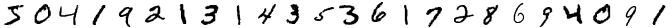

A fast library for increasing the number of training images by applying various transformations.
Introduction
Augmentor is a real-time image augmentation library designed to render the process of artificial dataset enlargement more convenient, less error prone, and easier to reproduce. It offers the user the ability to build a stochastic image-processing pipeline (or simply augmentation pipeline) using image operations as building blocks. In other words, an augmentation pipeline is little more but a sequence of operations for which the parameters can (but need not) be random variables, as the following code snippet demonstrates.
julia> using Augmentor
julia> pl = ElasticDistortion(6, scale=0.3, border=true) |>
Rotate([10, -5, -3, 0, 3, 5, 10]) |>
ShearX(-10:10) * ShearY(-10:10) |>
CropSize(28, 28) |>
Zoom(0.9:0.1:1.2)
5-step Augmentor.ImmutablePipeline:
1.) Distort using a smoothed and normalized 6×6 grid
2.) Rotate by θ ∈ [10, -5, -3, 0, 3, 5, 10] degree
3.) Either: (50%) ShearX by ϕ ∈ -10:10 degree. (50%) ShearY by ψ ∈ -10:10 degree.
4.) Crop a 28×28 window around the center
5.) Zoom by I ∈ {0.9×0.9, 1.0×1.0, 1.1×1.1, 1.2×1.2}Such a pipeline can then be used for sampling. Here we use the first few examples of the MNIST database.

The Julia version of Augmentor is engineered specifically for high performance applications. It makes use of multiple heuristics to generate efficient tailor-made code for the concrete user-specified augmentation pipeline. In particular Augmentor tries to avoid the need for any intermediate images, but instead aims to compute the output image directly from the input in one single pass.
For the Python version of Augmentor, you can find it here
What is Image Augmentation?
The term data augmentation is commonly used to describe the process of repeatedly applying various transformations to some dataset, with the hope that the output (i.e. the newly generated observations) bias the model towards learning better features. Depending on the structure and semantics of the data, coming up with such transformations can be a challenge by itself.
Images are a special class of data that exhibit some interesting properties in respect to their structure. For example the dimensions of an image (i.e. the pixel) exhibit a spatial relationship to each other. As such, a lot of commonly used augmentation strategies for image data revolve around affine transformations, such as translations or rotations. Because images are so popular and special case of data, they deserve their own sub-category of data augmentation, which we will unsurprisingly refer to as image augmentation.
The general idea is the following: if we want our model to generalize well, then we should design the learning process in such a way as to bias the model into learning such transformation-equivariant properties. One way to do this is via the design of the model itself, which for example was idea behind convolutional neural networks. An orthogonal approach to bias the model to learn about this equivariance - and the focus of this package - is by using label-preserving transformations.
Label-preserving Transformations
Before attempting to train a model using some augmentation pipeline, it's a good idea to invest some time in deciding on an appropriate set of transformations to choose from. Some of these transformations also have parameters to tune, and we should also make sure that we settle on a decent set of values for those.
What constitutes as "decent" depends on the dataset. In general we want the augmented images to be fairly dissimilar to the originals. However, we need to be careful that the augmented images still visually represent the same concept (and thus label). If a pipeline only produces output images that have this property we call this pipeline label-preserving.
Consider the following example from the MNIST database of handwritten digits. Our input image clearly represents its associated label "6". If we were to use the transformation Rotate180 in our augmentation pipeline for this type of images, we could end up with the situation depicted by the image on the right side.
Input (input_img) | Output (output_img) |
|---|---|
To a human, this newly transformed image clearly represents the label "9", and not "6" like the original image did. In image augmentation, however, the assumption is that the output of the pipeline has the same label as the input. That means that in this example we would tell our model that the correct answer for the image on the right side is "6", which is clearly undesirable for obvious reasons.
Thus, for the MNIST dataset, the transformation Rotate180 is not label-preserving and should not be used for augmentation.
Working with images in Julia
Augmentor exists along other packages in the JuliaImages ecosystem. To learn how images are treated in Julia, how pixels are represented, and more, read the documentation.
Citing Augmentor
If you use Augmentor for academic research and wish to cite it, please use the following paper.
Marcus D. Bloice, Christof Stocker, and Andreas Holzinger, Augmentor: An Image Augmentation Library for Machine Learning, arXiv preprint arXiv:1708.04680, https://arxiv.org/abs/1708.04680, 2017.